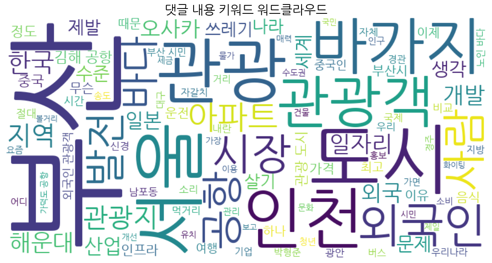

1. 보고서 개요
2026년 상반기 기준, 부산은 아시아의 주요 관광 거점으로 도약했습니다. 본 보고서는 KBS 기획 보도와 유튜브 시민 댓글 데이터를 교차 분석하여, 화려한 성장의 이면에 숨겨진 구조적 문제들을 진단합니다. 단순한 양적 확장을 넘어 '시민의 일상'과 '관광객의 소비'가 선순환하는 지속 가능한 도시 모델을 위한 정책적 로드맵을 제시합니다.
성장의 핵심 동력
- • 타이완 시장의 공략 성공: 전체 외국인 관광객의 20%를 차지하는 타이완 관광객 중심 맞춤형 마케팅 적중
- • 체류형 관광 모델로의 전환: 워케이션 비자 신청 전국 3위, 외국인 카드 지출액 전국 2위 달성
- • 전통시장의 로컬리티: 국제시장 등 로컬 체험 트렌드와 결합된 실소비 공간으로의 기능 전환
- • 통합 인프라: '비짓 부산 패스' 등 통합 관광 패스 도입을 통한 편의성 극대화
유튜브 댓글 분석 결과
미디어 vs 시민: 관점의 차이
미디어의 진단: 구조적 위기
특정 거점(서면, 해운대, 부산역)에 집중된 자본과 인파를 도시 균형 발전을 저해하는 구조적 결함으로 진단. 인위적인 분산 정책과 거점 개발 확대를 강력히 촉구함.
시민의 진단: 생활 밀착형 문제
쏠림 현상을 관광업의 본질로 수용. 시민들은 분산보다 '바가지 요금 근절', '공항 인프라 확충', '청년 일자리 창출', '주거 안정' 등 실생활과 직결된 문제 해결을 우선시.
지속 가능한 부산 관광 로드맵
단기 전략 (체감형 변화)
- 01. 관광 기여금 환원제 시범 도입: 특정 관광지 수익을 해당 구청 정주 환경 개선 비용으로 직접 배정하여 시민 혜택 체감도 증대.
- 02. 기초 생활 환경 관리 강화: 주요 관광지 쓰레기 무단 투기 상시 단속반 운영 및 환경 미화원 24시간 순환 배치로 쾌적한 보행 환경 확보.
- 03. 교통 인프라 직결 해결: 김해공항 택시 호객 행위 근절 및 승차 거부 신고 포상제 확대, 공항-주요 거점 간 심야 급행 버스 노선 확충.
- 04. 상인회 연계 투명 거래: 모든 상점 카드 결제 의무화 유도 및 불친절/바가지 요금 신고 접수 시 삼진아웃제 도입으로 관광객 신뢰도 회복.
중기 전략 (브랜드화 및 확산)
- 01. 데이터 기반 동선 관리: 실시간 혼잡도 모니터링 시스템을 공공 앱으로 제공하여 관광객을 원도심 및 서부산권으로 지능적으로 분산 유도.
- 02. 원도심 관광 코스 브랜딩: 남포동·영도 일대 보행 환경 정비, 광장형 공간 조성 및 버스킹/간이 테이블 배치로 문화적 휴식 공간 재창조.
- 03. 소통형 관광 인프라 구축: 해운대·청사포 등 교통 취약지의 마을버스 노선 증차 및 외국인 관광객 편의를 위한 다국어 실시간 안내 체계 고도화.
장기 전략 (구조적 선순환)
- 01. 관광-일자리 선순환 생태계: 관광 스타트업 및 로컬 기업 유치 지원, 관광객에게만 의존하지 않는 정주 기업 친화 환경 조성 및 로컬 일자리 연계.
- 02. 도시 재생 중심의 지속 가능성: 관광 수익을 아파트 난개발 억제 및 노후 주거 지역 도시 재생 비용으로 투입하여 시민 삶의 질 향상.
- 03. 글로벌 마케팅 및 네트워크: 타이완 시장을 넘어 동남아 및 유럽 관광객 타겟의 '부산만의 클래식/로컬 문화' 브랜딩 강화 및 글로벌 네트워크 연결.
시민 인식 및 댓글 사례
지역 자부심
경제 및 고충
정책 제안
정치 및 기타
